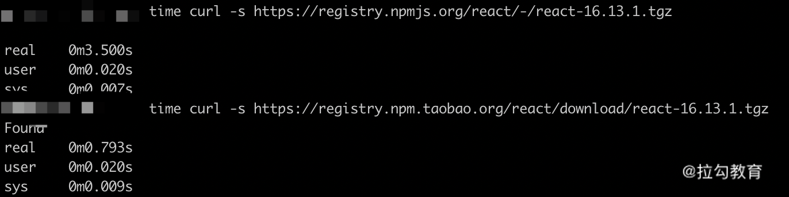

- 00 开篇词 建立上帝视角，全面系统掌握前端效率工程化.md.html
- 01 项目基石：前端脚手架工具探秘.md.html
- 02 界面调试：热更新技术如何开着飞机修引擎？.md.html
- 03 构建提速：如何正确使用 SourceMap？.md.html
- 04 接口调试：Mock 工具如何快速进行接口调试？.md.html
- 05 编码效率：如何提高编写代码的效率？.md.html
- 06 团队工具：如何利用云开发提升团队开发效率？.md.html
- 07 低代码工具：如何用更少的代码实现更灵活的需求.md.html
- 08 无代码工具：如何做到不写代码就能高效交付？.md.html
- 09 构建总览：前端构建工具的演进.md.html
- 10 流程分解：Webpack 的完整构建流程.md.html
- 11 编译提效：如何为 Webpack 编译阶段提速？.md.html
- 12 打包提效：如何为 Webpack 打包阶段提速？.md.html
- 13 缓存优化：那些基于缓存的优化方案.md.html
- 14 增量构建：Webpack 中的增量构建.md.html
- 15 版本特性：Webpack 5 中的优化细节.md.html
- 16 无包构建：盘点那些 No-bundle 的构建方案.md.html
- 17 部署初探：为什么一般不在开发环境下部署代码？.md.html
- 18 工具盘点：掌握那些流行的代码部署工具.md.html
- 19 安装提效：部署流程中的依赖安装效率优化.md.html
- 20 流程优化：部署流程中的构建流程策略优化.md.html
- 21 容器方案：从构建到部署，容器化方案的优势有哪些？.md.html
- 22 案例分析：搭建基本的前端高效部署系统.md.html
- 23 结束语 前端效率工程化的未来展望.md.html
- 捐赠
20 流程优化：部署流程中的构建流程策略优化
上节课我们分析了部署流程中，安装依赖阶段执行效率的影响因素和执行过程细节。思考题是如果使用 npm 的话，在最佳条件下是否也可以达到像 Yarn 一样瞬间完成依赖安装呢？答案是当然可以。在今天课程的第一部分我们就将了解如何利用安装目录缓存达到这一效果。
我们将从部署流程效率优化的实战角度来分析几个主要耗时阶段的提效方法。部署流程的第一个耗时阶段就是依赖安装。这一阶段中影响执行效率的工具和方法在上节课中已经分析过，这节课主要从 CI 系统的开发者角度来讨论一下，作为服务各项目的 CI 系统，有哪些通用的效率优化方案。
依赖安装阶段的提效
提升依赖下载速度
项目在安装依赖时如果不能命中本地缓存，就需要通过远程下载的方式来获取远程依赖包的数据。因此对于 CI 系统而言，首先需要考虑的是如何提升下载的速度。除了硬件条件外，有以下因素会对下载速度产生影响：
1.依赖包下载源（registry）：各依赖管理工具默认的下载源都是位于国外的，换成国内的镜像源会对下载速度的提升十分明显。例如下面代码和图片中的例子：
#npm设置下载源
npm config set registry xxxx
#yarn设置下载源
yarn config set registry xxxx

下载同样的依赖包，使用国内镜像源的速度只有官方源的 1/4。有条件的情况下可以在企业内网部署私有源，下载速度可以得到进一步提升。
2.二进制下载源：对于一些依赖包（例如 node-sass 等），在安装过程中还需下载二进制文件，这类文件的下载不遵循 registry 的地址，因此需要对这类文件单独配置下载路径来提升下载速度。示例配置如下代码（更多配置可以参考国内的镜像网址）：
npm config set sass-binary-site https://npm.taobao.org/mirrors/node-sass
npm config set puppeteer_download_host https://npm.taobao.org/mirrors
多项目共用依赖缓存
无论使用哪种依赖管理工具（npm、Yarn、pnpm……），本地缓存对于提升安装阶段的效率而言都是十分重要的。因此，对于使用多台构建服务器的分布式 CI 系统而言，要考虑的是如何最大化地利用缓存。例如让使用相同依赖工具的项目共用相同的服务器，以及让技术栈相同的项目共用相同的服务器，从而使得新项目接入时最大可能地命中已有缓存。
安装目录缓存
在 CI 系统中，除了保留常规的依赖缓存外，还可以尝试对安装目录进行缓存。以 npm 为例：
- 缓存写入：在初次安装完成后，我们可以将安装完成后的 node_modules 目录内的内容与项目的 package-lock.json 文件的内容进行关联：以 package-lock.json 文件内容的 Hash 值作为缓存的 Key，将 node_modules 目录压缩打包存储到缓存空间内。
- 缓存读取：再次执行安装过程时，首先判断当前代码的 package-lock.json 内容的 Hash 值是否能够命中缓存目录中的 Key 值。如果命中缓存，则说明项目的依赖版本并未发生变化，因此可以直接使用缓存中的 node_modules 压缩包解压，无须再执行依赖安装的完整流程。
这种对安装目录缓存的方式在命中时只需解压，几乎瞬间完成，与使用 Yarn 的项目命中缓存后的效果相似，适用于不能保留项目工作空间的 CI 系统，但是在使用时还是有一些注意点：
- 尽管这种人工缓存方式的过程效率较高，但是与原生的依赖缓存相比，对磁盘空间的利用率较低。原生的依赖缓存以单个依赖包为存储单元，即使项目升级了个别依赖包版本，剩下不变的大部分依赖包在安装时仍然可以命中缓存，缓存空间中只会新增变更的版本数据。而人工缓存安装目录的方式以 Lock 文件的 Hash 值为 Key，当个别依赖版本发生变更时，整个缓存即宣告失效，需要在依赖安装结束后重新缓存整个安装目录。
- 影响安装的关联因素：对于前端项目而言，执行安装后的依赖包内容实际上不仅和项目中的依赖版本相关，甚至还和执行安装时的操作系统以及 NodeJS 版本有关。因此，对于分布式的 CI 系统而言，如果共用缓存空间，则必须在生成缓存 Key 时将这些变量因素也加入其中参与计算。
检测项目 Lock 文件
Lock 文件对于依赖安装过程的重要性在上节课已经讨论过了。在现实中，一方面需要项目的开发者注意对 Lock 文件的保存和维护，另一方面在 CI 系统的工作流程中也可以加入对 Lock 文件的检测。当项目安装流程结束时，如果发现有未提交的 Lock 文件，即表明项目代码仓库未对 Lock 文件进行追踪。此时可主动通知项目开发者对该问题进行关注和修复。
代码构建阶段的提效
构建阶段是整个部署流程中最耗时的一个环节。在之前的课程里，我们用了整个模块来讨论作为项目的开发者该如何提升构建过程中的效率。在这里，我们再以 CI 系统的开发者的角度来分析CI 系统又能在其中发挥什么作用。
CI 系统中的持久化缓存
CI 系统中项目的构建空间通常是临时的，在开始部署时创建项目工作目录，在部署结束后删除工作目录，以达到节约资源的目的。但是这种情况的弊端就在于无法利用构建过程中的持久化缓存机制。
以 Webpack 为例，项目执行构建后，中间过程的缓存默认都存放于 node_modules/.cache 目录下。在部署系统中，随着部署流程的结束，工作目录中的 node_modules 目录也被删除。因此再次构建时，无法利用持久化缓存来提升再次构建的效率。
即使使用了依赖安装阶段的安装目录缓存策略，也只会缓存初次构建后的 node_modules 目录。再次构建后，持久化缓存数据可能发生变化，但是由于安装目录缓存是跟随 Lock 文件的版本存储的，在 Lock 文件不变的情况下，无法更新持久化缓存数据。
因此，在 CI 系统中需要对项目的持久化缓存数据做单独的备份与还原：
- 备份：在项目构建结束后，对项目的目录结构进行扫描，找到 .cache 目录（也可以写入项目构建配置中），依据其相对项目根目录的路径生成备份目录名称（持久化缓存的读写由生成缓存的工具控制其验证规则，因此在备份时无须考虑缓存映射关系）。例如可以把项目中 /client/node_modules/.cache 多层目录转换为折叠目录 clientnode_modules.cache（使用折叠目录的原因是便于解析和还原），然后将其备份到 CI 系统专用的持久化缓存备份空间中。
- 还原：在部署过程进行到开始构建的阶段时，查看备份空间中是否存在对应项目的持久化缓存目录，若存在，则直接解析目录结构，将 .cache 还原回项目相应的目录中。
通过这样的机制，就可以使项目在 CI 系统中也可以享受持久化缓存带来的构建效率提升。
产物打包阶段的提效
CI 系统在构建结束后，需要将产物进行压缩打包，以便归档和在推送产物到服务器时减少传输数据量，提升传输效率。传统的打包过程默认使用 Gzip 作为压缩方式，但事实上我们还可以选择其他压缩工具提升效率。
提升压缩效率的工具
这里介绍两种压缩工具：Pigz 和 Zstd。更多压缩工具的选择以及性能对比可以参见参考文档。
首先我们对这两种工具和 tar 命令中默认的 Gzip 压缩选项的参数进行对比（数据来自上面的参考文档），如下面的表格所示：
从表格中可以发现：
- 对于同一款压缩工具来说，压缩等级越低，压缩速度越快。代价是相应的压缩率越低，压缩体积会相应增大。
- 同样使用默认压缩等级，Pigz 的压缩速度是 Gzip 的两倍多，而 Zstd 的压缩速度是 Gzip 的15 倍。
- 在都使用最高压缩等级的情况下，Pigz 的压缩速度是 Gzip 的4 倍多，而 Zstd 的压缩速度可以达到 Gzip 的16 倍。
因此，在处理大文件目录的打包压缩时，可以考虑使用这些工具来替代默认的 Gzip 压缩方式。
但是在使用时还需要注意以下几点：
- 待压缩的文件体积越大，不同工具的压缩时间差异越明显。如果待压缩的内容体积不大（例如一些静态网站的打包产物），则仍旧可以使用默认的 Gzip 压缩。
- Pigz 和 Zstd 都启用了并行处理，因此处理过程中 CPU 和内存的占用会比 Gzip 更高。
- Pigz 的压缩产物和 Gzip 格式是兼容的，因此可以较广泛地作为 Gzip 的替代。相比之下，Zstd 则是不兼容的方案，它的压缩产物在压缩时也需要使用 Zstd 才能处理，因此对于构建产物这样的资源，如果使用这种格式，则不光在 CI 系统中需要安装 Zstd，且在部署推送的目标服务器上也需要安装和使用相应工具。如果不能统一工具，则 Pigz 是更好的选择。事实上，Zstd 往往被用于压缩与解压流程闭环的应用场景中，例如本文第一部分讲到的安装目录缓存就可以使用这种压缩格式，以获得最高的处理效率。
总结
这节课我们主要从实战角度出发来讨论部署流程的几个主要耗时环节的提效方法，包括依赖安装阶段的多维度提升安装效率、代码构建阶段的持久化缓存备份、产物打包阶段的提升压缩效率等。这些方法在实践中对于部署流程效率的提升都能起到较明显的积极作用。你可以课后结合自己所使用的部署工具来分析目前的工作流程是否有优化空间。
今天的课后思考题是：本节课我们在哪些方案中使用了缓存机制？它们各自的作用分别是什么呢？
下节课我们来聊聊一种特殊的 CI 系统：容器化构建部署的特点。
© 2019 - 2023 Liangliang Lee. Powered by gin and hexo-theme-book.